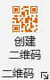

，则可调出二维码条形码设置窗口，选择二维码页面：
，则可调出二维码条形码设置窗口，选择二维码页面：Ribbon菜单Word 格式助手中如下图所示部分可快速创建二维码。
单击创建二维码按钮，程序将根据当前选中的内容创建二维码，创建二维码的相关参数设置可以通过加载项设置进行调整。当前如果未选择任何内容，或者选择的内容为空格时，则程序将提示输入生成二维码的内容；如果当前选择内容内存在超链接，则将以第一个超链接地址作为内容生成二维码，而不以显示内容生成二维码。
如需要更多的二维码设置，单击Ribbon菜单二维码右下角的小箭头，则可调出二维码条形码设置窗口，选择二维码页面：
本程序根据输入的内容创建二维码，理论上二维码最大容量为2953字节，程序会根据数据量自动选择二维码的版本（1-40版本）。预览二维码可以实时看到将要创建的二维码，并可从预览窗口的右下角看到图片的尺寸。如果输入的内容全为空格，将不会生成二维码。本界面加载时各项设定为加载项设置中的默认设置，但后续调整不影响默认设置。
指二维码码元的颜色，码元指二维码或深色或浅色的单位图块，代表着二维码的数据信息。默认深色为黑色，浅色为白色。建议区别明显的颜色。
指二维码码元大小，以以像素为单位。设置越大的值，整个图片越大，但并非最终生成的二维码图片大小。
分为四级，越高，二维码信息量越大，被遮挡部分时，可识别性会提高，例如中间设置图标的情况下。
表示生成的二维码的静区，即二维码是否包含一个浅色边框。不包含静区的情况下，如二维码处于背景颜色纷杂的环境，可能出现识别失败问题。
指二维码的黑色码元图块并不紧密相连，而是会出现少许间隔，可以清晰的分辨一个个的码元。不建议在码元尺寸较小的时候使用，可能造成二维码识别失败问题。
指不绘制为正方形的码元，而是绘制成圆形的码元。在主流的扫描识别装置都可以识别，但不排除有些识别装置无法识别。
显示于二维码中心位置的小型图片。图片直接通过覆盖码元信息绘制，并通过二维码本身的纠错能力保证二维码仍然有效识别。
指图标的绘制前，先将图标区域进行背景颜色填充。图标的边框区域将显示此颜色，图片如为PNG图片，其透明区域也显示此颜色。
以遮挡二维码的面积百分比计（1-50），设置越大，遮挡二维码信息越多，在纠错等级较低时，可能读取失败。
图标与二维码之间添加的一个边框的宽度，以像素为单位。
当选择圆形时，则图标覆盖区域为圆形，且图标本身以圆形区域为边界进行剪裁；默认以矩形绘制中心图标，设置为矩形时可以进一步设置矩形的圆角半径，则图标以圆角矩形样式填充，以外的区域将剪切。任何模式下，图片都将被缩放至图标设定区域内。
单击Ribbon菜单二维码右下角的小箭头，则可调出二维码条形码设置窗口，选择条形码页面：
本程序仅支持EAN13、EAN8、Code128B这三种模式的条形码编码规则。其中EAN13码值为12位数字，校验位自动生成；EAN8码值位7位数字，校验位自动生成；Code128B必须为合法的字符范围（Unicode：0020~007F），否则将不能识别。
指条码的单位宽浅色条或深色条的像素宽度，取值范围1~10，条码不能指定图形宽度，以设定的单元宽度、静区宽度以及编码信息长度确定最终图形宽度。
条码的颜色，默认深色为黑色，浅色为白色，可以设定其他颜色，但需要保证颜色对比度，以确保条码能被扫描识别。不建议互换深浅颜色，例如以黑色做浅色条，白色做深色条，可能导致有些条码识别设备无法识别。
指条码的整体高度，包括文字高度，如果不显示文字，则为条形的高度。最小高度为30像素。
为确保条码能被识别，两侧必须设置静区，且静区宽度不小于单位宽度的10倍。
设置是否在条码下方绘制条码编码值，对于EAN13，EAN8条码，编码值绘制，以常见的商品条码值绘制方法，且自动补充校验位。Code128B则以居中方式绘制文字。条码文字可以单独设置文字高度、文字颜色以及文字字体样式。